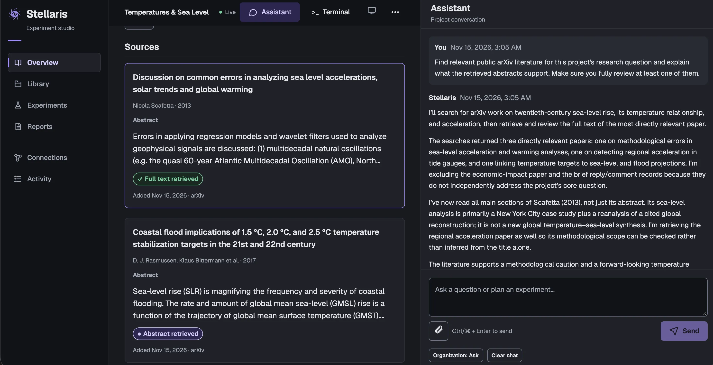
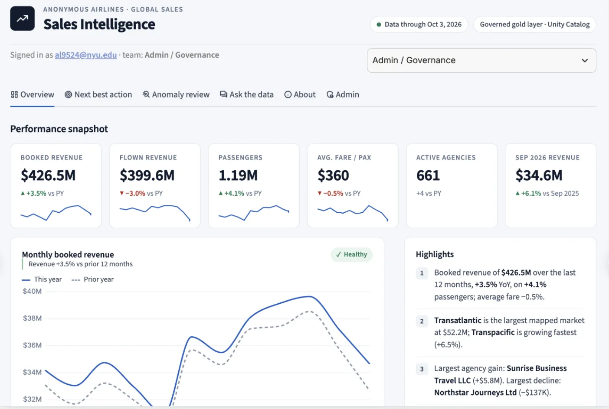
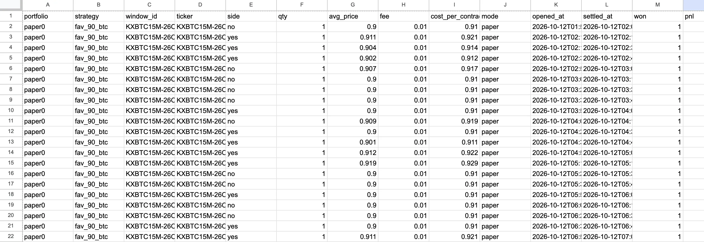
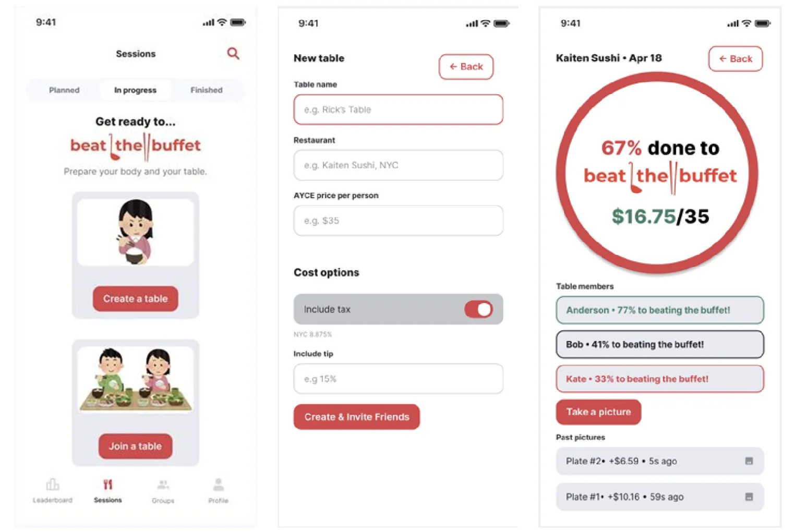
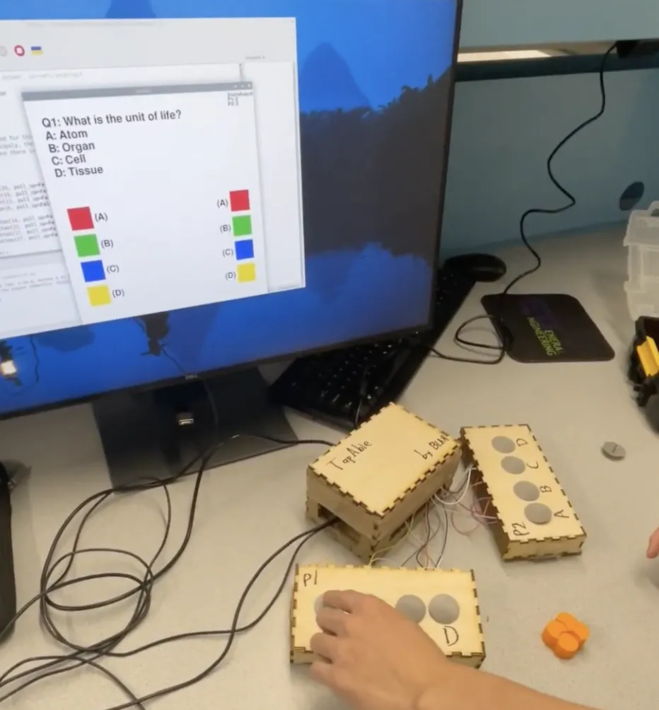
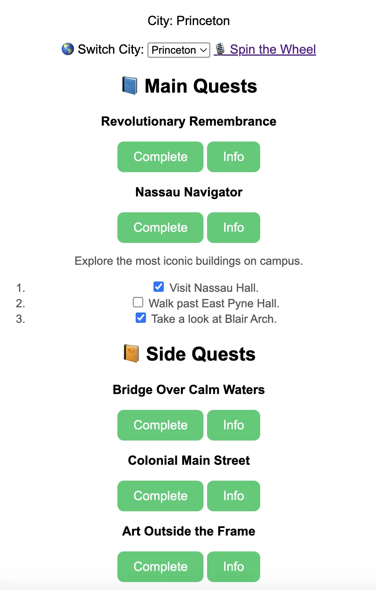

Anderson Liu
Home | Experience | Projects | Interesting Stuff
At Acadia National Park, ME
About
Hello, I'm Anderson! I study Math & CS @ NYU. Besides building fun projects, I enjoy trying out NYC's restaurants, watching movies or NBA, and playing Geoguessr.
I could have made this website all flashy and interactive, but I wanted to keep this one straight to the point (and easy to load!).
Experience
Google Developers Group @ NYU - Machine Learning Engineer
October '26 - Present
Building system that uses ML to predict outcomes of academic debates in real-time.
Tech@NYU x Databricks - Data Engineer Mentee
September '26 - Present
Building sales app for American Airlines using Databricks Intelligence Platform. Learned about ETL pipelines, Agents, and ML. Lots of Genie Code.
New York University IT Dept - Audio Video Engineer
August '26 - Present
Managing NYU's thousands of AV equipment.
Projects
Stellaris
GitHub
|
Devpost
Python, TypeScript, Docker
For HackPrinceton F'26. All-in-one collaborative accessible research workspace.

Airline Sales Intelligence App
Databricks, SQL
Part of a program with Databricks and one of my school clubs. Learned a lot about data and forward deployed engineering through this, as we built an app catered toward a major U.S. airline.

NotEnoughMarkets
GitHub
Python, VPS, Kalshi API
For fun. Open-sourced tools for Kalshi algotrading.

Beat the Buffet
GitHub
Python, TypeScript, YOLO
For NYU EEG '26 hackathon. YOLO-based CV + geographic location-based price scraping. Take a photo of your AYCE plate, showing you the value of the food with respect to local ingredient price. Sashimi arbitrage.

tapAble
Raspberry Pi, Python
For my freshman year design project class. Hardware–software integrated assistive input educational system for ALS patients, first hardware project with Raspberry Pi!

MarcoPolo
Devpost
HTML, CSS, JavaScript, Dart, Flutter
Winner in my HS hackathon. Culmination of all the full-stack web app knowledge I learned throughout HS.

CougarGuessr
GitHub
Java
Geoguessr clone within my school; project for my AP CSA class. One of my simplest projects, having to work within the simple Java tools allowed by my teacher. Enjoy looking back on how far my projects have come!
Interesting Stuff
Geography Fun Fact
You Should Watch